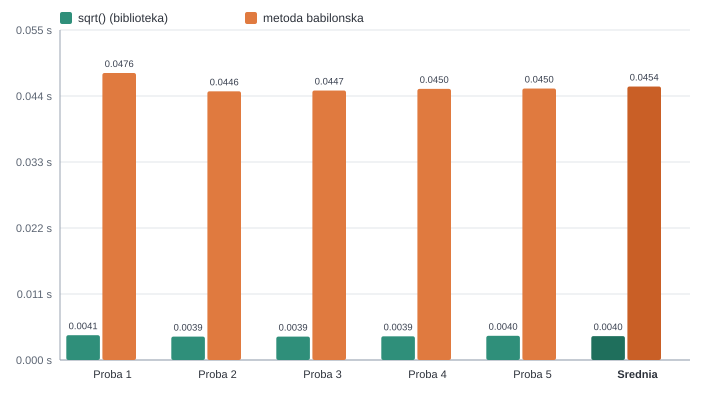
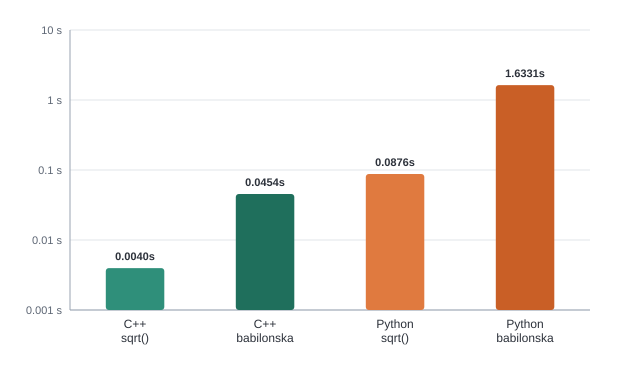

<title>Pierwiastek kwadratowy — metoda babilońska</title>
<meta charset="UTF-8">
<meta name="viewport" content="width=device-width, initial-scale=1">
<meta name="description" content="Projekt: numeryczne metody obliczania pierwiastka kwadratowego, ze szczególnym uwzględnieniem metody babilońskiej (Herona) oraz eksperymentu porównującego jej wydajność z funkcją biblioteczną sqrt().">
<link rel="stylesheet" href="style.css">
<link rel="icon" href="data:image/svg+xml,%3Csvg xmlns='http://www.w3.org/2000/svg' viewBox='0 0 32 32'%3E%3Crect width='32' height='32' rx='7' fill='%231f6f5c'/%3E%3Ctext x='16' y='23' font-family='Georgia,serif' font-size='20' fill='white' text-anchor='middle'%3E%E2%88%9A%3C/text%3E%3C/svg%3E">

<header class="site-nav">
  <div class="nav-inner">
    <a class="brand" href="#glowna"><span class="glyph">√</span> Pierwiastek kwadratowy</a>
    <input type="checkbox" id="nav-toggle">
    <label class="burger" for="nav-toggle"><span></span><span></span><span></span></label>
    <nav class="links">
      <a href="#glowna">Start</a>
      <a href="#historia">Historia</a>
      <a href="#matematyka">Matematyka</a>
      <a href="#babilonska">Metoda babilońska</a>
      <a href="#inne-metody">Inne metody</a>
      <a href="#implementacja">Implementacja</a>
      <a href="#eksperyment">Eksperyment</a>
      <a href="#wyniki">Wyniki</a>
      <a href="#wnioski">Wnioski</a>
      <a href="#zrodla">Źródła</a>
    </nav>
  </div>
</header>

<section class="hero" id="glowna">
  <div class="wrap">
    <h1>Jak komputer liczy pierwiastek kwadratowy?</h1>
    <p class="lead">
      Projekt szkolny poświęcony numerycznym metodom obliczania <b>pierwiastka kwadratowego</b> —
      od glinianej tabliczki babilońskiej sprzed niemal czterech tysięcy lat, przez matematyczną
      teorię zbieżności, po realny eksperyment porównujący czas działania własnej implementacji
      z funkcją biblioteczną <code>sqrt()</code>.
    </p>
    <div class="formula-badge">
      <span><i>x</i><sub>n+1</sub> = ½ ( <i>x</i><sub>n</sub> + S / <i>x</i><sub>n</sub> )</span>
    </div>

    <div class="badge-list" style="margin-top:28px;">
      <li>Metoda babilońska (Herona)</li>
      <li>C++ / Python / Excel</li>
      <li>1 000 000 obliczeń × 5 powtórzeń</li>
      <li>Dokładność 15 miejsc po przecinku</li>
    </div>
  </div>
</section>

<section id="historia">
  <div class="wrap">
    <h2><span class="tag">01</span> Historia</h2>
    <p class="kicker">Pierwiastek kwadratowy liczono na długo przed powstaniem matematyki symbolicznej —
      metody, które dziś programujemy, mają tysiące lat.</p>

    <ul class="timeline">
      <li>
        <span class="when">ok. 1800–1600 p.n.e. — Babilonia</span>
        Gliniana tabliczka <b>YBC 7289</b> zawiera rysunek kwadratu z przekątną i zapisane w systemie
        sześćdziesiątkowym przybliżenie <code>1;24,51,10</code>, czyli
        1,41421296… — wartość <i>√2</i> z błędem rzędu 10<sup>-6</sup>. To najstarszy znany ślad
        procedury iteracyjnego uśredniania, która dziś nosi nazwę „metody babilońskiej”.
      </li>
      <li>
        <span class="when">ok. 1650 p.n.e. — Egipt</span>
        Papirus Rhinda zawiera zadania wymagające przybliżania pierwiastków przy pomocy ułamków
        jednostkowych — inne, mniej systematyczne podejście do tego samego problemu.
      </li>
      <li>
        <span class="when">I w. n.e. — Aleksandria</span>
        <b>Heron z Aleksandrii</b> w dziele <i>Metrica</i> opisuje wprost algorytm: wziąć dowolne
        przybliżenie, uśrednić je z ilorazem liczby i tego przybliżenia, i powtarzać. Stąd druga
        nazwa metody — <b>metoda Herona</b>.
      </li>
      <li>
        <span class="when">III–VII w. — Indie</span>
        Rękopis Bakhshali zawiera analogiczny wzór iteracyjny do przybliżania pierwiastków,
        rozwijany niezależnie w tradycji indyjskiej.
      </li>
      <li>
        <span class="when">Starożytne Chiny</span>
        „Dziewięć rozdziałów sztuki matematycznej” opisuje algorytm ekstrakcji pierwiastka „cyfra
        po cyfrze”, wykonywany ręcznie na liczydle — metoda ucząca się do dziś na lekcjach jako
        „pisemne obliczanie pierwiastka”.
      </li>
      <li>
        <span class="when">1669–1690 — Newton i Raphson</span>
        Ogólna metoda znajdowania miejsc zerowych funkcji różniczkowalnych. Jak pokazujemy w
        sekcji <a href="#matematyka">Podstawy matematyczne</a>, metoda babilońska jest jej
        szczególnym przypadkiem — tylko o dwa tysiące lat starszym.
      </li>
      <li>
        <span class="when">1999 — „Fast inverse square root”</span>
        W silniku gry <i>Quake III Arena</i> pojawia się słynna sztuczka bitowa z magiczną stałą
        <code>0x5f3759df</code>, przybliżająca 1/√x bez dzielenia — jedna iteracja metody Newtona
        wystarczała, by dociągnąć wynik do użytecznej dokładności (patrz
        <a href="#inne-metody">Inne metody</a>).
      </li>
      <li>
        <span class="when">Dziś</span>
        Współczesne procesory mają sprzętową instrukcję pierwiastka (np. <code>SQRTSD</code> na
        x86, <code>FSQRT</code> na ARM), zaimplementowaną w krzemie algorytmami cyfra-po-cyfrze
        lub Goldschmidta — potomkami tych samych idei co metoda babilońska.
      </li>
    </ul>
  </div>
</section>

<section id="matematyka">
  <div class="wrap">
    <h2><span class="tag">02</span> Podstawy matematyczne</h2>
    <p class="kicker">Skąd właściwie bierze się wzór ½(x + S/x)? Wyprowadźmy go z ogólnej metody Newtona
      i sprawdźmy, dlaczego zbiega tak szybko.</p>

    <h3>Definicja</h3>
    <p>
      Pierwiastkiem kwadratowym z liczby nieujemnej <i>S</i> nazywamy liczbę <i>x ≥ 0</i>
      spełniającą równanie <i>x</i><sup>2</sup> = <i>S</i>. Zagadnienie obliczeniowe sprowadza się
      więc do znalezienia miejsca zerowego funkcji:
    </p>
    <div class="formula"><i>f</i>(<i>x</i>) = <i>x</i><sup>2</sup> − <i>S</i></div>

    <h3>Wyprowadzenie z metody Newtona</h3>
    <p>Ogólny wzór iteracyjny Newtona–Raphsona dla równania <i>f</i>(<i>x</i>) = 0 ma postać:</p>
    <div class="formula"><i>x</i><sub>n+1</sub> = <i>x</i><sub>n</sub> − <i>f</i>(<i>x</i><sub>n</sub>) / <i>f</i>′(<i>x</i><sub>n</sub>)</div>
    <p>
      Dla <i>f</i>(<i>x</i>) = <i>x</i><sup>2</sup> − <i>S</i> pochodna wynosi
      <i>f</i>′(<i>x</i>) = 2<i>x</i>, zatem:
    </p>
    <div class="formula">
      <i>x</i><sub>n+1</sub> = <i>x</i><sub>n</sub> − (<i>x</i><sub>n</sub><sup>2</sup> − <i>S</i>) / (2<i>x</i><sub>n</sub>)
      &nbsp;=&nbsp; (2<i>x</i><sub>n</sub><sup>2</sup> − <i>x</i><sub>n</sub><sup>2</sup> + <i>S</i>) / (2<i>x</i><sub>n</sub>)
      &nbsp;=&nbsp; (<i>x</i><sub>n</sub><sup>2</sup> + <i>S</i>) / (2<i>x</i><sub>n</sub>)
      &nbsp;=&nbsp; ½ ( <i>x</i><sub>n</sub> + S / <i>x</i><sub>n</sub> )
    </div>
    <p>
      Metoda babilońska to więc dokładnie metoda Newtona zastosowana do równania
      <i>x</i><sup>2</sup> = <i>S</i> — z tą różnicą, że Babilończycy odkryli ją intuicyjnie,
      niemal 3000 lat przed Newtonem.
    </p>

    <h3>Interpretacja geometryczna: uśrednianie</h3>
    <p>
      Jeżeli <i>x</i> jest przybliżeniem <i>√S</i> z nadmiarem, to <i>S/x</i> jest przybliżeniem
      z niedomiarem (i odwrotnie) — bo ich iloczyn zawsze wynosi dokładnie <i>S</i>. Nowe
      przybliżenie to po prostu <b>średnia arytmetyczna</b> tych dwóch liczb, która zawsze leży
      bliżej prawdziwego pierwiastka niż gorsze z dwóch wyjściowych przybliżeń. Z nierówności
      między średnią arytmetyczną a geometryczną (AM–GM) wynika, że dla <i>n</i> ≥ 1 zawsze
      <i>x</i><sub>n</sub> ≥ <i>√S</i>, a ciąg (<i>x</i><sub>n</sub>) jest malejący i zbieżny do <i>√S</i>.
    </p>

    <h3>Dlaczego zbiega tak szybko</h3>
    <p>
      Niech <i>e</i><sub>n</sub> = <i>x</i><sub>n</sub> − <i>√S</i> oznacza błąd po <i>n</i>-tej
      iteracji. Podstawiając do wzoru iteracyjnego i upraszczając, otrzymujemy:
    </p>
    <div class="formula"><i>e</i><sub>n+1</sub> ≈ <i>e</i><sub>n</sub><sup>2</sup> / (2<i>x</i><sub>n</sub>)</div>
    <p>
      Błąd w kolejnym kroku jest w przybliżeniu <b>proporcjonalny do kwadratu</b> poprzedniego
      błędu — to tzw. <b>zbieżność kwadratowa</b>. W praktyce oznacza to, że liczba poprawnych
      cyfr znaczących podwaja się z każdą iteracją. Poniższa tabela (dla <i>S</i> = 10,
      <i>x</i><sub>0</sub> = 10) pokazuje to zjawisko: już po 6 iteracjach osiągana jest pełna
      precyzja liczby zmiennoprzecinkowej typu <code>double</code> (ok. 15–16 cyfr znaczących).
    </p>

    <div class="card">
      <table>
        <thead><tr><th>n</th><th><i>x</i><sub>n</sub></th><th>|<i>x</i><sub>n</sub> − <i>x</i><sub>n-1</sub>|</th></tr></thead>
        <tbody>
          <tr><td>0</td><td>10,000000000000000</td><td>—</td></tr>
          <tr><td>1</td><td>5,500000000000000</td><td>4,5 × 10⁰</td></tr>
          <tr><td>2</td><td>3,659090909090909</td><td>1,8 × 10⁰</td></tr>
          <tr><td>3</td><td>3,196005081874647</td><td>4,6 × 10⁻¹</td></tr>
          <tr><td>4</td><td>3,162455622803890</td><td>3,4 × 10⁻²</td></tr>
          <tr><td>5</td><td>3,162277665175675</td><td>1,8 × 10⁻⁴</td></tr>
          <tr><td>6</td><td>3,162277660168379</td><td>5,0 × 10⁻⁹</td></tr>
          <tr class="avg"><td>7</td><td>3,162277660168379</td><td>≈ 0 (zbieżność)</td></tr>
        </tbody>
      </table>
    </div>
  </div>
</section>

<section id="babilonska">
  <div class="wrap">
    <h2><span class="tag">03</span> Metoda babilońska</h2>
    <p class="kicker">Praktyczna strona algorytmu: jak go zatrzymać, ile kosztuje, i jak wybrać
      przybliżenie startowe.</p>

    <div class="grid-2">
      <div class="card">
        <h4>Krok po kroku</h4>
        <ol class="steps">
          <li>Wybierz przybliżenie startowe <i>x</i><sub>0</sub> &gt; 0 (najprościej: <i>x</i><sub>0</sub> = S).</li>
          <li>Oblicz <i>x</i><sub>n+1</sub> = ½ ( <i>x</i><sub>n</sub> + S / <i>x</i><sub>n</sub> ).</li>
          <li>Jeśli |<i>x</i><sub>n+1</sub> − <i>x</i><sub>n</sub>| &lt; ε, zakończ — wynikiem jest <i>x</i><sub>n+1</sub>.</li>
          <li>W przeciwnym razie wróć do kroku 2.</li>
        </ol>
      </div>
      <div class="card">
        <h4>Warunek stopu i dokładność</h4>
        <p>
          W tym projekcie przyjęto <b>ε = 10⁻¹⁵</b>, czyli dokładność do 15 miejsc po przecinku —
          w praktyce granica sensownej precyzji liczby typu <code>double</code> (64-bitowej
          liczby zmiennoprzecinkowej IEEE 754, ok. 15–17 cyfr znaczących). Dzięki zbieżności
          kwadratowej osiągnięcie tej dokładności wymaga zwykle mniej niż 10 iteracji — nawet dla
          bardzo dużych liczb.
        </p>
      </div>
    </div>

    <div class="callout good">
      <b>Dlaczego x₀ = S jest bezpiecznym wyborem?</b> Nawet dla dużych <i>S</i> pierwsza iteracja
      natychmiast sprowadza przybliżenie w rozsądny zakres (<i>x</i><sub>1</sub> = (S+1)/2), a
      kolejne kroki korzystają już z pełnej zbieżności kwadratowej. Lepszy start (np. przybliżenie
      z rejestru wykładnika liczby zmiennoprzecinkowej) skraca liczbę iteracji o 1–2, ale nie
      zmienia rzędu złożoności.
    </div>

    <h3>Wypróbuj sam — kalkulator na żywo</h3>
    <p class="calc-hint">Wpisz dowolną liczbę nieujemną — poniższa tabela pokaże, krok po kroku,
      jak metoda babilońska (uruchomiona bezpośrednio w Twojej przeglądarce, w JavaScript) dochodzi
      do wyniku, i porówna go z wbudowaną funkcją <code>Math.sqrt()</code>.</p>
    <div class="card calc-card reveal">
      <div class="calc-controls">
        <label for="calc-input">Liczba S:</label>
        <input type="number" id="calc-input" value="2" min="0" step="any" inputmode="decimal">
        <button id="calc-btn" type="button">Oblicz √S</button>
      </div>
      <div class="stat-row" id="calc-summary" hidden>
        <div class="stat"><div class="num" id="calc-result">—</div><div class="lbl">metoda babilońska</div></div>
        <div class="stat"><div class="num" id="calc-native">—</div><div class="lbl">Math.sqrt()</div></div>
        <div class="stat"><div class="num" id="calc-iters">—</div><div class="lbl">iteracji do zbieżności</div></div>
      </div>
      <div class="calc-table" id="calc-table-wrap" hidden>
        <table>
          <thead><tr><th>n</th><th>x_n</th><th>|różnica|</th></tr></thead>
          <tbody id="calc-tbody"></tbody>
        </table>
      </div>
    </div>
  </div>
</section>

<section id="inne-metody">
  <div class="wrap">
    <h2><span class="tag">04</span> Inne metody <span style="font-weight:400;color:var(--ink-soft);font-size:0.85rem;">(dla chętnych)</span></h2>
    <p class="kicker">Metoda babilońska nie jest jedynym sposobem — oto krótki przegląd
      alternatyw, historycznych i współczesnych.</p>

    <div class="grid-2">
      <div class="card">
        <h4>Metoda bisekcji</h4>
        <p>Szukamy miejsca zerowego <i>f</i>(<i>x</i>) = <i>x</i>² − <i>S</i> dzieląc przedział
        [0, max(1, S)] na pół i zawężając go w stronę pierwiastka. Prosta i zawsze zbieżna, ale
        <b>liniowa</b> — każda iteracja daje tylko jeden dodatkowy bit dokładności, więc do 15
        cyfr po przecinku potrzeba dziesiątek, a nie kilku iteracji.</p>
      </div>
      <div class="card">
        <h4>Algorytm „cyfra po cyfrze”</h4>
        <p>Klasyczna metoda pisemna znana ze szkoły — pierwiastek wyznacza się cyfra po cyfrze,
        analogicznie do dzielenia pisemnego, grupując cyfry liczby w pary od przecinka. Używana
        też w implementacjach sprzętowych (m.in. w starszych FPU) w wariancie binarnym.</p>
      </div>
      <div class="card">
        <h4>Fast inverse square root</h4>
        <p>Słynna sztuczka z <i>Quake III Arena</i> (1999): interpretuje się bity liczby
        zmiennoprzecinkowej jako liczbę całkowitą, odejmuje ją od magicznej stałej
        <code>0x5f3759df</code>, co daje zaskakująco dobre przybliżenie 1/√x, a następnie
        dokonuje <b>jednej</b> iteracji metody Newtona, by je dopracować. Pokazuje, że sama
        metoda babilońska/Newtona wciąż stoi w centrum nawet najbardziej „sprytnych” hacków.</p>
      </div>
      <div class="card">
        <h4>CORDIC</h4>
        <p>Algorytm typu „przesuń i dodaj” (bez mnożenia i dzielenia), używany w kalkulatorach i
        układach FPGA. Oblicza pierwiastek (i funkcje trygonometryczne) za pomocą sekwencji
        przesunięć bitowych i dodawań — wydajny sprzętowo, choć wolniej zbieżny niż metoda
        Newtona.</p>
      </div>
    </div>

    <p style="margin-top:18px;">
      Wszystkie te metody łączy jedno: sprowadzają obliczenie pierwiastka do prostszych operacji
      (dodawanie, dzielenie, przesunięcia bitowe) wykonywanych iteracyjnie — różnią się jedynie
      tempem zbieżności i kosztem pojedynczego kroku.
    </p>
  </div>
</section>

<section id="implementacja">
  <div class="wrap">
    <h2><span class="tag">05</span> Realizacja metody babilońskiej</h2>
    <p class="kicker">Ten sam algorytm w czterech wcieleniach: pseudokod, C++, Python i arkusz
      kalkulacyjny.</p>

    <h3>Pseudokod</h3>
    <pre><code>funkcja pierwiastek_babilonski(S, eps = 1e-15):
    jeśli S &lt; 0:  zwróć błąd
    jeśli S = 0:  zwróć 0

    x ← S                      // przybliżenie startowe
    powtarzaj:
        poprzednie ← x
        x ← 0.5 * (x + S / x)  // krok Herona
    dopóki |x - poprzednie| &gt; eps

    zwróć x</code></pre>

    <h3>C++</h3>
    <div class="code-tabs"><span>babilonska.cpp</span></div>
    <pre><code>double pierwiastekBabilonski(double S, double eps = 1e-15) {
    if (S &lt; 0) return NAN;
    if (S == 0) return 0.0;

    double x = S;                 // przyblizenie poczatkowe
    double poprzednie;

    do {
        poprzednie = x;
        x = 0.5 * (x + S / x);    // wzor iteracyjny Herona
    } while (std::fabs(x - poprzednie) &gt; eps);

    return x;
}</code></pre>
      <p><b>Przykładowy wynik uruchomienia</b> (pełny kod w
        <a href="code/cpp/babilonska.cpp">code/cpp/babilonska.cpp</a>):</p>
      <pre><code>sqrt(2.000000000000000)
  metoda babilonska : 1.414213562373095
  std::sqrt          : 1.414213562373095
  roznica            : 0.000000000000000

sqrt(999999.000000000000000)
  metoda babilonska : 999.999499999875070
  std::sqrt          : 999.999499999874956
  roznica            : 0.000000000000114</code></pre>

    <h3>Python</h3>
    <div class="code-tabs"><span>babilonska.py</span></div>
    <pre><code>def pierwiastek_babilonski(s: float, eps: float = 1e-15) -> float:
    if s &lt; 0:
        raise ValueError("Liczba pod pierwiastkiem nie moze byc ujemna")
    if s == 0:
        return 0.0

    x = s
    while True:
        poprzednie = x
        x = 0.5 * (x + s / x)
        if abs(x - poprzednie) &lt;= eps:
            return x</code></pre>
      <p><b>Przykładowy wynik uruchomienia</b> (pełny kod w
        <a href="code/python/babilonska.py">code/python/babilonska.py</a>):</p>
      <pre><code>sqrt(2)
  metoda babilonska : 1.414213562373095
  math.sqrt          : 1.414213562373095
  roznica            : 0.000000000000000

sqrt(999999)
  metoda babilonska : 999.999499999875070
  math.sqrt          : 999.999499999874956
  roznica            : 0.000000000000114</code></pre>

    <h3>Arkusz kalkulacyjny (Excel)</h3>
    <p>
      Plik <a href="code/excel/metoda_babilonska.xlsx">code/excel/metoda_babilonska.xlsx</a>
      zawiera dwa arkusze. Pierwszy rozpisuje kolejne iteracje wiersz po wierszu — komórka
      <code>S</code> jest parametrem wejściowym, a każdy wiersz odwołuje się formułą do wiersza
      poprzedniego:
    </p>
    <div class="img-frame">
      <div class="excel-shot">
        <div class="row head"><div>n</div><div>x_n (formuła)</div><div>|różnica|</div></div>
        <div class="row"><div>0</div><div>=C5 <span style="color:#8a93a3">(x₀ = S)</span></div><div></div></div>
        <div class="row"><div>1</div><div>=0.5*(C9+$C$4/C9)</div><div>=ABS(C10-C9)</div></div>
        <div class="row"><div>2</div><div>=0.5*(C10+$C$4/C10)</div><div>=ABS(C11-C10)</div></div>
        <div class="row"><div>…</div><div>…</div><div>…</div></div>
        <div class="row"><div>24</div><div>=0.5*(C32+$C$4/C32)</div><div>≈ 0</div></div>
      </div>
      <figcaption>Podgląd struktury arkusza „Metoda babilonska” — 24 wiersze iteracji, kolumna
        różnic wybarwiona skalą kolorów od czerwieni (duża różnica) do zieleni (zbieżność).</figcaption>
    </div>
    <p>
      Drugi arkusz, „Porównanie kilku liczb”, zestawia dla kilku wartości <i>S</i> wynik metody
      babilońskiej (jako jedna, 24-krotnie zagnieżdżona formuła Herona) z wbudowaną funkcją
      <code>=SQRT(S)</code> oraz różnicę bezwzględną między nimi — obie kolumny liczone są w
      pełni formułami, bez wpisywania gotowych wyników.
    </p>
  </div>
</section>

<section id="eksperyment">
  <div class="wrap">
    <h2><span class="tag">06</span> Eksperyment</h2>
    <p class="kicker">Czy „ręczna” metoda babilońska jest w praktyce wolniejsza od funkcji
      bibliotecznej — i o ile?</p>

    <h3>Metodologia</h3>
    <ul>
      <li><b>Zakres danych:</b> liczby całkowite 1…1 000 000.</li>
      <li><b>Dokładność:</b> ε = 10⁻¹⁵ (15 miejsc po przecinku) dla metody babilońskiej.</li>
      <li><b>Mierzona wielkość:</b> czas wykonania <i>całej</i> serii 1 000 000 obliczeń (nie
        pojedynczego wywołania).</li>
      <li><b>Powtórzenia:</b> 5 pomiarów każdej metody, w jednym uruchomieniu programu (aby
        wyeliminować narzut startu procesu).</li>
      <li><b>Język / kompilacja:</b> C++17, <code>g++ -O2</code>, pomiar
        <code>std::chrono::high_resolution_clock</code>.</li>
      <li><b>Środowisko:</b> Apple M4, macOS 15 (Darwin 24.6), Apple Clang 17.</li>
      <li><b>Kontrola poprawności:</b> obie metody sumują wyniki do zmiennej pomocniczej — suma
        kontrolna obu metod zgadza się do wyświetlanej precyzji we wszystkich próbach, co
        potwierdza, że porównujemy poprawne, równoważne wyniki (kod:
        <a href="code/cpp/eksperyment.cpp">code/cpp/eksperyment.cpp</a>).</li>
    </ul>

    <div class="callout">
      <b>Dlaczego cała seria, a nie jedno wywołanie?</b> Pojedyncze wywołanie <code>sqrt()</code>
      trwa ułamki nanosekund — poniżej rozdzielczości zegara systemowego i podatne na szum
      pomiarowy. Sumowanie czasu 1 000 000 wywołań uśrednia ten szum i daje wynik odtwarzalny
      między próbami.
    </div>
  </div>
</section>

<section id="wyniki">
  <div class="wrap">
    <h2><span class="tag">07</span> Wyniki</h2>
    <p class="kicker">Pięć powtórzeń serii 1 000 000 obliczeń, C++, wynik w sekundach.</p>

    <div class="card">
      <table>
        <thead><tr><th>Próba</th><th>sqrt()</th><th>Metoda babilońska</th></tr></thead>
        <tbody>
          <tr><td>1</td><td>0,004118 s</td><td>0,047588 s</td></tr>
          <tr><td>2</td><td>0,003889 s</td><td>0,044553 s</td></tr>
          <tr><td>3</td><td>0,003889 s</td><td>0,044695 s</td></tr>
          <tr><td>4</td><td>0,003935 s</td><td>0,044954 s</td></tr>
          <tr><td>5</td><td>0,004006 s</td><td>0,045020 s</td></tr>
          <tr class="avg"><td>Średnia</td><td>0,003967 s</td><td>0,045362 s</td></tr>
        </tbody>
      </table>
    </div>

    <div class="stat-row">
      <div class="stat"><div class="num">~11,4×</div><div class="lbl">metoda babilońska wolniejsza od sqrt() (C++)</div></div>
      <div class="stat"><div class="num">6–7</div><div class="lbl">iteracji do zbieżności (typowa liczba, S ≤ 10⁶)</div></div>
      <div class="stat"><div class="num">&lt; 1,2×10⁻¹³</div><div class="lbl">maks. różnica wyniku obu metod w testach</div></div>
    </div>

    <div class="img-frame">
      
      <figcaption>Rys. 1. Czas wykonania 1 000 000 obliczeń: <code>sqrt()</code> a metoda
        babilońska, C++, 5 prób + średnia.</figcaption>
    </div>

    <h3>Dodatkowo: to samo w Pythonie</h3>
    <p>
      Dla porównania między językami przeprowadzono identyczny eksperyment w Pythonie
      (<a href="code/python/eksperyment.py">code/python/eksperyment.py</a>) — nieobowiązkowe
      rozszerzenie, poza wymaganym zakresem zadania, ale dobrze ilustrujące wpływ narzutu
      interpretera na algorytmy iteracyjne.
    </p>
    <div class="card">
      <table>
        <thead><tr><th>Próba</th><th>sqrt()</th><th>Metoda babilońska</th></tr></thead>
        <tbody>
          <tr><td>1</td><td>0,086439 s</td><td>1,621391 s</td></tr>
          <tr><td>2</td><td>0,087567 s</td><td>1,704114 s</td></tr>
          <tr><td>3</td><td>0,087608 s</td><td>1,604282 s</td></tr>
          <tr><td>4</td><td>0,088479 s</td><td>1,615481 s</td></tr>
          <tr><td>5</td><td>0,087932 s</td><td>1,619986 s</td></tr>
          <tr class="avg"><td>Średnia</td><td>0,087605 s</td><td>1,633051 s</td></tr>
        </tbody>
      </table>
    </div>

    <div class="img-frame">
      
      <figcaption>Rys. 2. Średnie czasy wszystkich czterech wariantów (skala logarytmiczna) —
        C++ vs Python, sqrt() vs metoda babilońska.</figcaption>
    </div>
  </div>
</section>

<section id="wnioski">
  <div class="wrap">
    <h2><span class="tag">08</span> Wnioski</h2>

    <ol class="steps">
      <li>
        <b>Metoda babilońska jest poprawna</b> — dla całego przebadanego zakresu (1…1 000 000)
        wyniki obu metod zgadzają się do 13.–15. miejsca po przecinku; jedyne różnice wynikają z
        akumulacji błędów zaokrągleń liczb zmiennoprzecinkowych, a nie z błędu algorytmu.
      </li>
      <li>
        <b>Jest jednak wyraźnie wolniejsza</b> — w C++ około <b>11–12 razy</b>, a w Pythonie
        prawie <b>19 razy</b> wolniejsza od wbudowanej funkcji <code>sqrt()</code>. Różnica ta
        wynika z tego, że biblioteczny <code>sqrt()</code> korzysta bezpośrednio ze sprzętowej
        instrukcji procesora (jeden takt zegara), podczas gdy metoda babilońska wykonuje kilka
        pełnych iteracji z dzieleniem zmiennoprzecinkowym za każdym razem.
      </li>
      <li>
        <b>Narzut interpretera potęguje różnicę</b> — w Pythonie krotność spowolnienia jest
        wyższa niż w C++ (≈19× wobec ≈11×), ponieważ każda iteracja pętli
        <code>while</code> w czystym Pythonie kosztuje dodatkowo czas na interpretację bajtkodu —
        koszt ten mnoży się przez liczbę iteracji potrzebnych do zbieżności.
      </li>
      <li>
        <b>Zbieżność kwadratowa działa zgodnie z teorią</b> — mimo że algorytm wykonuje kilka
        pełnych „przebiegów” (nie jedną operację), liczba iteracji potrzebna do pełnej precyzji
        <code>double</code> pozostaje mała (6–7) niezależnie od wielkości liczby w badanym
        zakresie, co potwierdza wyprowadzenie z sekcji <a href="#matematyka">Podstawy
        matematyczne</a>.
      </li>
      <li>
        <b>Praktyczny wniosek:</b> w kodzie produkcyjnym należy zawsze używać funkcji
        bibliotecznej <code>sqrt()</code> — jest szybsza, dokładniejsza w skrajnych przypadkach
        (nieskończoności, liczby ujemne, podprzepełnienia) i przetestowana przez dekady użycia.
        Wartość metody babilońskiej jest dziś przede wszystkim <b>edukacyjna</b> — uczy, jak
        „pod maską” działają metody numeryczne, na których opierają się też znacznie bardziej
        zaawansowane algorytmy (np. metoda Newtona w uczeniu maszynowym czy optymalizacji).
      </li>
    </ol>
  </div>
</section>

<section id="zrodla" class="sources">
  <div class="wrap">
    <h2><span class="tag">09</span> Źródła</h2>
    <ol>
      <li>
        Wikipedia — <i>Methods of computing square roots</i>,
        <a href="https://en.wikipedia.org/wiki/Methods_of_computing_square_roots" target="_blank" rel="noopener">en.wikipedia.org/wiki/Methods_of_computing_square_roots</a>
      </li>
      <li>
        Wikipedia (PL) — <i>Pierwiastek kwadratowy</i>,
        <a href="https://pl.wikipedia.org/wiki/Pierwiastek_kwadratowy" target="_blank" rel="noopener">pl.wikipedia.org/wiki/Pierwiastek_kwadratowy</a>
      </li>
      <li>
        Wikipedia — <i>YBC 7289</i> (babilońska tabliczka z przybliżeniem √2),
        <a href="https://en.wikipedia.org/wiki/YBC_7289" target="_blank" rel="noopener">en.wikipedia.org/wiki/YBC_7289</a>
      </li>
      <li>
        Wikipedia — <i>Newton's method</i>,
        <a href="https://en.wikipedia.org/wiki/Newton%27s_method" target="_blank" rel="noopener">en.wikipedia.org/wiki/Newton's_method</a>
      </li>
      <li>
        Wikipedia — <i>Fast inverse square root</i>,
        <a href="https://en.wikipedia.org/wiki/Fast_inverse_square_root" target="_blank" rel="noopener">en.wikipedia.org/wiki/Fast_inverse_square_root</a>
      </li>
      <li>
        Heron z Aleksandrii, <i>Metrica</i> (I w. n.e.) — historyczne źródło metody iteracyjnego
        uśredniania.
      </li>
      <li>
        D. E. Knuth, <i>The Art of Computer Programming, vol. 2: Seminumerical Algorithms</i> —
        rozdział o algorytmach arytmetycznych, w tym ekstrakcji pierwiastka.
      </li>
      <li>
        cppreference.com — <i>std::sqrt</i>,
        <a href="https://en.cppreference.com/w/cpp/numeric/math/sqrt" target="_blank" rel="noopener">en.cppreference.com/w/cpp/numeric/math/sqrt</a>
      </li>
      <li>
        Python documentation — <i>math.sqrt</i>,
        <a href="https://docs.python.org/3/library/math.html#math.sqrt" target="_blank" rel="noopener">docs.python.org/3/library/math.html#math.sqrt</a>
      </li>
      <li>
        Materiały własne projektu: kod źródłowy C++/Python, arkusz Excel i surowe wyniki
        pomiarów — katalogi <code>code/</code> i <code>experiment/</code> repozytorium projektu.
      </li>
    </ol>
  </div>
</section>

<footer>
  <div class="wrap">
    Projekt szkolny — numeryczne metody obliczania pierwiastka kwadratowego. Kod, eksperyment i
    treść strony przygotowane samodzielnie z pomocą narzędzi AI (wyszukiwanie informacji,
    pisanie i sprawdzanie kodu, przygotowanie HTML/CSS i wykresów) — zgodnie z zasadami projektu.
  </div>
</footer>

<script>
(function () {
  "use strict";

  try { initCalculator(); } catch (e) { /* kalkulator niedostępny, reszta strony dziala dalej */ }
  try { initCopyButtons(); } catch (e) { /* przyciski kopiowania niedostepne */ }
  try { initReveal(); } catch (e) { /* fallback: pokaz wszystko od razu */ showAllReveal(); }

  // ---- kalkulator na żywo (metoda babilońska w JS) ----
  function initCalculator() {
  var input = document.getElementById("calc-input");
  var btn = document.getElementById("calc-btn");
  var summary = document.getElementById("calc-summary");
  var tableWrap = document.getElementById("calc-table-wrap");
  var tbody = document.getElementById("calc-tbody");
  var resultEl = document.getElementById("calc-result");
  var nativeEl = document.getElementById("calc-native");
  var itersEl = document.getElementById("calc-iters");

  function fmt(v) { return v.toFixed(15); }

  function runCalc() {
    var S = parseFloat(input.value);
    tbody.innerHTML = "";

    if (!isFinite(S) || S < 0) {
      summary.hidden = true;
      tableWrap.hidden = false;
      tbody.innerHTML = '<tr><td colspan="3">Podaj liczbę nieujemną.</td></tr>';
      return;
    }

    var eps = 1e-15;
    var x = S;
    var n = 0;
    var rowsHtml = "<tr><td>0</td><td>" + fmt(x) + "</td><td>—</td></tr>";

    if (S > 0) {
      var prev, diff;
      do {
        prev = x;
        x = 0.5 * (x + S / x);
        n++;
        diff = Math.abs(x - prev);
        rowsHtml += "<tr><td>" + n + "</td><td>" + fmt(x) + "</td><td>" +
          diff.toExponential(2) + "</td></tr>";
      } while (diff > eps && n < 100);
    }

    tbody.innerHTML = rowsHtml;
    resultEl.textContent = fmt(x);
    nativeEl.textContent = fmt(Math.sqrt(S));
    itersEl.textContent = n;
    summary.hidden = false;
    tableWrap.hidden = false;
  }

  if (btn) {
    btn.addEventListener("click", runCalc);
    input.addEventListener("keydown", function (e) {
      if (e.key === "Enter") runCalc();
    });
    runCalc();
  }
  }

  // ---- przyciski "kopiuj" przy blokach kodu ----
  function initCopyButtons() {
  document.querySelectorAll("pre").forEach(function (pre) {
    var codeEl = pre.querySelector("code");
    if (!codeEl) return;
    var btnCopy = document.createElement("button");
    btnCopy.type = "button";
    btnCopy.className = "copy-btn";
    btnCopy.textContent = "Kopiuj";
    btnCopy.addEventListener("click", function () {
      var text = codeEl.innerText;
      var done = function () {
        btnCopy.textContent = "Skopiowano!";
        btnCopy.classList.add("copied");
        setTimeout(function () {
          btnCopy.textContent = "Kopiuj";
          btnCopy.classList.remove("copied");
        }, 1500);
      };
      if (navigator.clipboard && navigator.clipboard.writeText) {
        navigator.clipboard.writeText(text).then(done).catch(done);
      } else {
        done();
      }
    });
    pre.appendChild(btnCopy);
  });
  }

  // ---- delikatna animacja pojawiania się przy przewijaniu ----
  function getRevealTargets() {
    return document.querySelectorAll(
      ".card, .grid-2 > div, .stat, .timeline li, .img-frame"
    );
  }

  function showAllReveal() {
    getRevealTargets().forEach(function (el) {
      el.classList.add("reveal");
      el.classList.add("in-view");
    });
  }

  function initReveal() {
    var toReveal = getRevealTargets();
    toReveal.forEach(function (el) { el.classList.add("reveal"); });

    if (!("IntersectionObserver" in window)) {
      toReveal.forEach(function (el) { el.classList.add("in-view"); });
      return;
    }

    var observer = new IntersectionObserver(
      function (entries) {
        entries.forEach(function (entry) {
          if (entry.isIntersecting) {
            entry.target.classList.add("in-view");
            observer.unobserve(entry.target);
          }
        });
      },
      { threshold: 0.1, rootMargin: "0px 0px -10px 0px" }
    );
    toReveal.forEach(function (el) { observer.observe(el); });

    // zabezpieczenie: gdyby obserwator z jakiegoś powodu nie zadziałał,
    // po chwili i tak odkryj resztę treści.
    setTimeout(function () {
      getRevealTargets().forEach(function (el) { el.classList.add("in-view"); });
    }, 4000);
  }
})();
</script>
